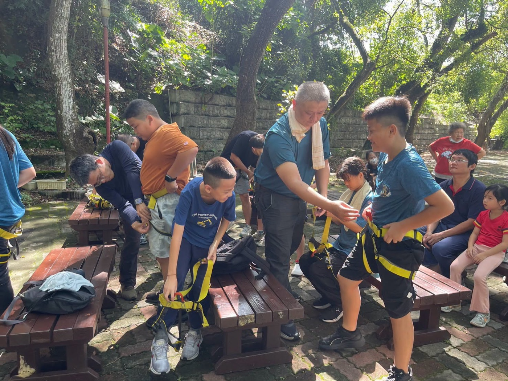
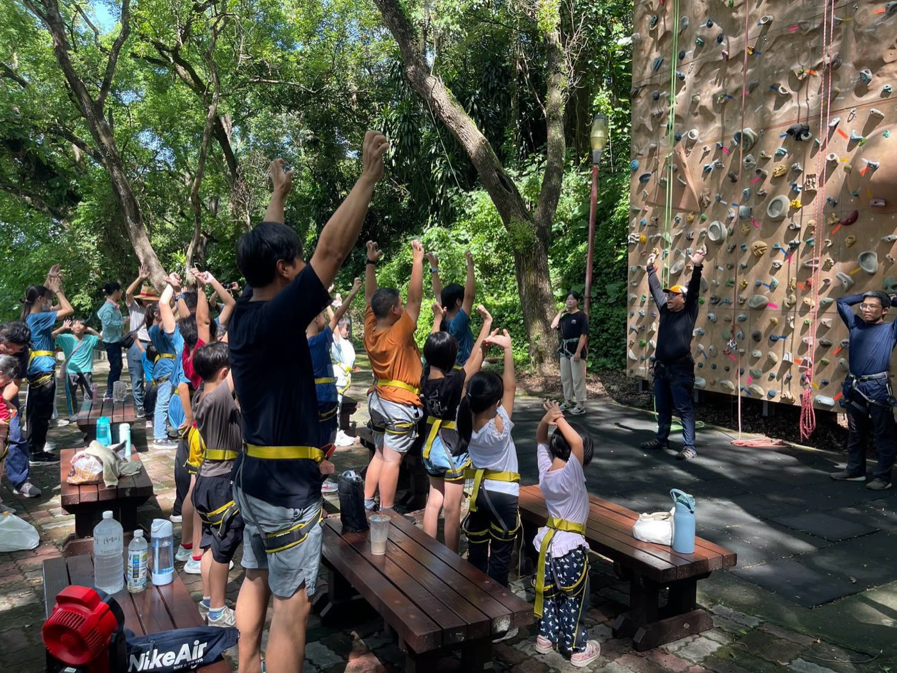
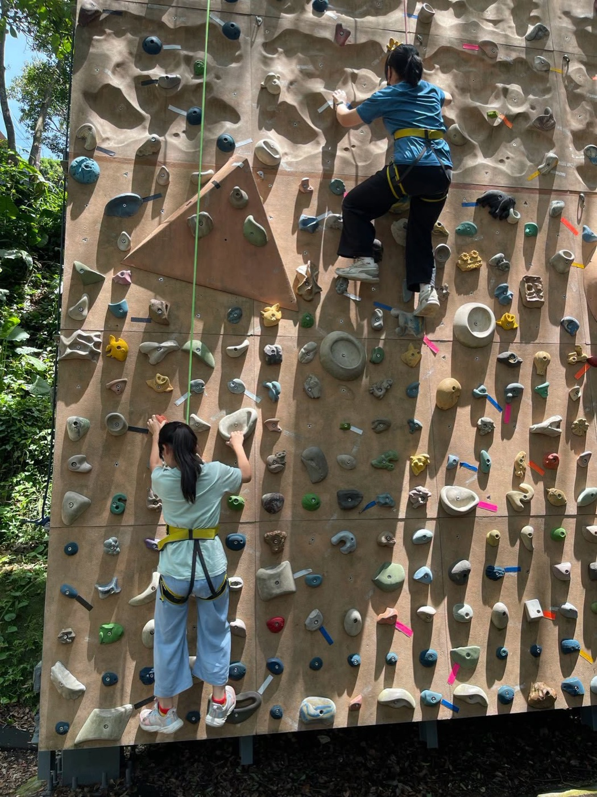
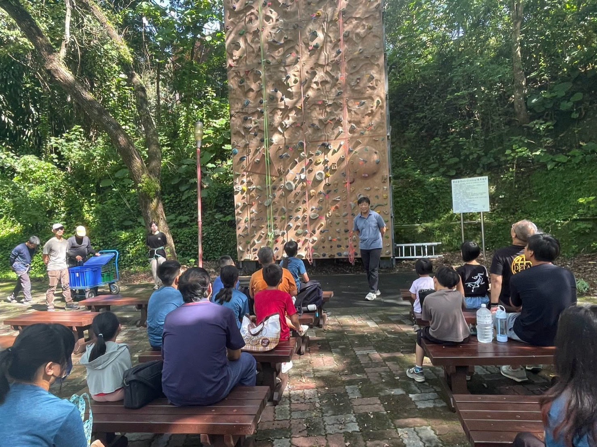

On July 28th, Hsinmin Elementary students took on a challenge that tested more than just their muscles — it tested their courage. Visiting the rock climbing wall at Erh-shui Junior High School, guided by the school's principal and a team of professional coaches, every child geared up, looked up, and found a way to take that first step off the ground.
Before the climb, coaches carefully helped students into their harnesses, checking every strap with patience and care. Then came the warm-up — arms stretched high, bodies ready, spirits rising. For many, this was their very first time standing at the base of a real climbing wall. The nerves were real. So was the excitement.




One by one, the children reached for the next hold, placed their feet carefully, and kept climbing. Some paused halfway — and then kept going. Some looked down, took a breath, and then looked up again. When a climber struggled, the crowd didn't stay quiet — classmates, parents, and coaches all cheered louder. The wall was high, but the support was higher.
What these children achieved today isn't measured in meters. It's the courage to try something new, the will to overcome fear, and the quiet confidence that grows every time you reach one hold higher. Thank you to the principal and coaches of Erh-shui Junior High for their patient guidance, and to every parent who came to cheer — your voices carried all the way to the top. 🧗
挑戰自我，勇敢跨越！新民的孩子們太棒了！
感謝二水國中校長與專業教練群的用心帶領與細心指導，帶領新民的孩子們踏上這場精彩又刺激的極限挑戰！面對高聳的攀岩牆，孩子們從一開始的緊張、猶豫，到彼此加油打氣、相互支持，最終勇敢跨出那一步，成功戰勝心中的恐懼，完成了一次次突破自我的壯舉！看到他們在攀登過程中展現出的堅毅眼神與自信笑容，真的讓人感到無比驕傲與感動。
特別感謝一路相伴、給予孩子們無限支持與鼓勵的各位家長們！有你們當最強大的後盾，孩子們才能無後顧之憂地勇往直前、挑戰極限。這不只是體能的鍛鍊，更是一場寶貴的勇氣試煉。相信這段難忘的冒險回憶，會在孩子們心中種下勇敢追夢的種子！
Words About Courage & Challenge英語學習角 · 勇氣與挑戰相關的小單字
Six key words — tap 🔊 to listen, then try the conversation and quiz.
六個關鍵字，點 🔊 聽發音，再試試對話和小考。
情境：一個學生向家長講述在二水國中的攀岩體驗。